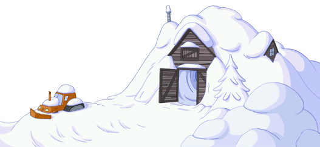

The goal of this game is to collect points to reveal my whole curriculum vitae. For that, you can walk trough the board game or catch stars, but pay attention to the yeti and malefic trees, they are really nervous and ready to make your game terrific. Good luck !